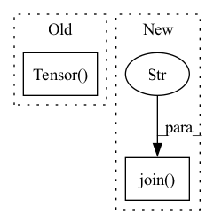

Pattern ID :6050
Before Change
speech = torch.transpose(torch.Tensor(self.feature_list[index][2]), 0, 1).to(self.device)
speech_len = torch.LongTensor([self.feature_list[index][3]]).to(self.device)
if self.spemb:
spemb = torch.Tensor( self.feature_list[index][4]) .to(self.device)
return text, text_len, speech, speech_len, spemb
return text, text_len, speech, speech_len
After Change
def __getitem__(self, index):
transcript = self.path_to_transcript_dict[self.key_list[index]]
path = self.key_list[index]
wave, sr = sf.read(os.path.join("Corpora/CSS10/" , path) )
if self.ap is None:
self.ap = AudioPreprocessor(input_sr=sr, output_sr=16000, melspec_buckets=80, hop_length=256, n_fft=1024)
text = self.tf.string_to_tensor(transcript).long()In pattern: SUPERPATTERN
Frequency: 3
Non-data size: 2
Instances Fragment ID: 21054449
Project Name: digitalphonetics/ims-toucan
Commit Name: 1e192df888be8f1dc1c20971132b31fe73153b7d
Time: 2021-02-22
Author: florian.lux@ims.uni-stuttgart.de
File Name: TransformerTTS/TransformerTTSDataset.py
M Class Name: TransformerTTSDataset
N Class Name: TransformerTTSDataset
M Method Name: __getitem__(2)
N Method Name: __getitem__(2)
M Parent Class: Dataset
N Parent Class: Dataset
M File Name: TransformerTTS/TransformerTTSDataset.py
N File Name: TransformerTTS/TransformerTTSDataset.py
M Start Line: 14
M End Line: 21
N Start Line: 32
N End Line: 44
Before Change
torch.LongTensor(datapoint[4]),
torch.Tensor(datapoint[5]),
torch.Tensor(datapoint[6]),
torch.Tensor( datapoint[7]) ])
else:
for datapoint in tqdm(self.datapoints):
tensored_datapoints.append([torch.Tensor(datapoint[0]),After Change
max_len_in_seconds=max_len_in_seconds,
cut_silences=cut_silence,
rebuild_cache=True)
datapoints = torch.load(os.path.join( cache_dir, "taco_train_cache.pt" ) , map_location="cpu")
dataset = datapoints[0]
norm_waves = datapoints[1]
Fragment ID: 21054451
Project Name: digitalphonetics/ims-toucan
Commit Name: d75af2f091227a4695d4887a9a8f23dc5d22b12b
Time: 2021-09-15
Author: florian.lux@ims.uni-stuttgart.de
File Name: TrainingInterfaces/Text_to_Spectrogram/FastSpeech2/FastSpeechDataset.py
M Class Name: FastSpeechDataset
N Class Name: FastSpeechDataset
M Method Name: __init__(13)
N Method Name: __init__(13)
M Parent Class: Dataset
N Parent Class: Dataset
M File Name: TrainingInterfaces/Text_to_Spectrogram/FastSpeech2/FastSpeechDataset.py
N File Name: TrainingInterfaces/Text_to_Spectrogram/FastSpeech2/FastSpeechDataset.py
M Start Line: 36
M End Line: 96
N Start Line: 36
N End Line: 109
Before Change
val_data.append(torch.Tensor(val_sample["pixels"].numpy()))
val_labels.append(val_sample["label"].numpy())
val_data = torch.stack(val_data,0)
val_labels = torch.Tensor( val_labels)
Client_EMNIST_Dataset_train = (train_data,train_labels)
Client_EMNIST_Dataset_val = (val_data,val_labels)
with open(train_path, "wb") as f:After Change
print("Done!")
// Removing cache files
shutil.rmtree(os.path.join( self.root,".cache" ) )
return
Fragment ID: 21054452
Project Name: mloptpsu/fedtorch
Commit Name: 7577f1e2efbce9c4cc0bbd149ec88313f35f1cf6
Time: 2021-01-23
Author: mohamadmahdi.kamani@gmail.com
File Name: fedtorch/components/datasets/loader/federated_datasets.py
M Class Name: EMNIST
N Class Name: EMNIST
M Method Name: download(1)
N Method Name: download(1)
M Parent Class: Dataset
N Parent Class: Dataset
M File Name: fedtorch/components/datasets/loader/federated_datasets.py
N File Name: fedtorch/components/datasets/loader/federated_datasets.py
M Start Line: 92
M End Line: 143
N Start Line: 94
N End Line: 137